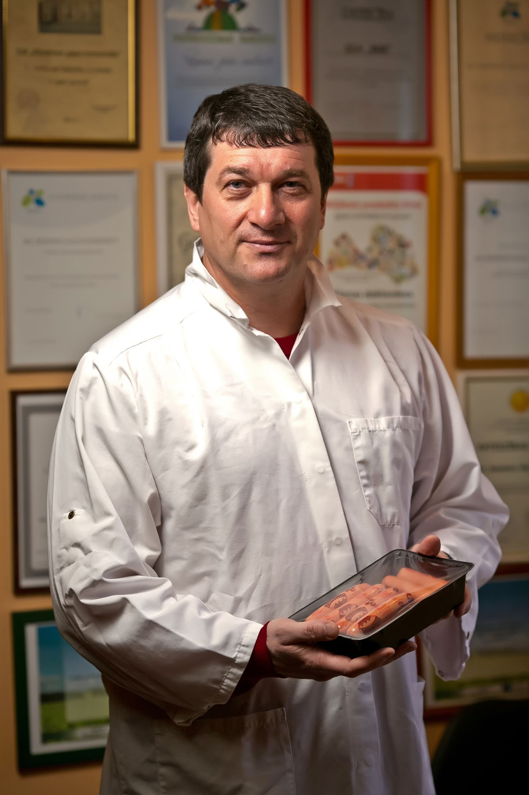

Žurnāls Forbes maija numurs 2014
Piecas receptes Latvijas ražotājiem
Nav šaubu, ka Krievijas un Ukrainas konflikts nesīs sev līdzi jaunu krīzes vilni. Tas jau sācis ietekmēt Latvijas uzņēmējus, sevišķi ražotājus, kuri eksportē savu produkciju uz lielo kaimiņvalsti Krieviju, kā arī Ukrainu. Pārtikas ražošanas uzņēmumu holdinga AB Holding, kurā ietverti Rēzeknes gaļas kombināts (RGK), Meat Union un Ventspils Zivju konservu kombināts (VZKK), īpašnieks Bislans Abdulmuslimovs jau izdomājis, ko darīt, un ir gatavs padalīties ar recepti.
«Es vienmēr esmu uzskatījis, ka jācenšas stādāt tā, lai uz vienu valsti vai reģionu eksports nepārsniedz 10–15% no produkcijas apjoma. Gaļas pārstrādē tieši tādi ir mūsu rādītāji. Tomēr, kas attiecas uz zivju produkcijas un it īpaši šprotu noieta tirgiem, tad NVS un Krievijas īpatsvars ir krietni lielāks. Tam ir vēsturiskas cēloņsakarības. Šprote ir pietiekami specifisks produkts ar noteiktu patērētāju. Tās ir vairāk kā gadsimtu senas tradīcijas un pieradinātas patērētāju garšas kārpiņas, kas prasa tieši šādu produktu. Šī produkta popularitāte bija un būs saistīta ar Baltijas jūras reģionu. Šprotes patēriņu mēs nekur īsti nepārcelsim. Nākotnē jāstrādā pie tā, lai no Baltijas jūras izejvielas radītu citus produktus, piemēram “Baltijas sardīni”. Ja tas izdosies, tad šim produktam būs tirgus visā rietumu pasaulē. Idejas un sākotnējās iestrādes ir, tagad kopā ar Latvijas zinātni jānonāk līdz produktam. Tieši tur arī jāinvestē ES līdzekļi. Bet kamēr šāds produkts vēl nav izstrādāts, mums jāpriecājas par katru uzņēmēju un katru šprotes kārbu, ko šajos sarežģītajos ģeopolitiskajos apstākļos izdodas realizēt gan Krievijā, gan Ukrainā» uzskata Bislans Abdulmuslimovs, norādot, ka savu produkciju sūta gan uz Eiropu, gan Vidusāziju, gan Persijas līča valstīm.
Meklējot jaunus tirgus viens no svarīgākajiem faktoriem ir piedalīšanās starptautiskajās izstādēs. Ar zivju produkciju holdings ik gadu piedalās vismaz piecās lielākajās pārtikas nozares izstādēs. Izstādes ir svarīgas ne tikai tāpēc, ka tā ir vieta kur satikt esošos vai savus nākamos biznesa partnerus, bet arī vieta kur gūt jaunas idejas produktu attīstībā. Tā ir vieta kur uzņēmējs un darbinieki var redzēt jaunākos sasniegumus nozarē, aplūkot jaunākās iekārtas un produktus. No katras šādas izstādes dalībnieki atgriežas ar jaunām idejām. Tikai tā var iet līdzi laikam un apsteigt savus konkurentus cīņā par tirgiem.
Daudzās izstādēs AB holdinga uzņēmumi gūst izcilus panākumus, piemēram, šā gada februārī VZKK piedalījās izstādē PRODEKSPO 2014 Krievijā, kur atzīta produkcijas kvalitāte – uzņēmums ieguva Zelta diplomus par šprotēm un balvu par labāko inovatīvo produktu. Pērn AB Holdinga uzņēmumi piedalījās lielākajā Vidusāzijas pārtikas nozares izstādē WorldFood Kazakhstan. «Šīs atzinības mums vajadzīgas nevis Krievijā, bet lai rādītu tās citu valstu klientiem un iegūtu pasūtījumus,» saka Bislans un piebilst, ka vienmēr jāuztur sacīkšu gars, tikai tad var cerēt uz veiksmi. «Rezultāti mums jau ir – esam ieguvuši klientus Kazahstānā un Azerbaidžānā. Pēdējie nupat viesojās Rēzeknē, lai iepazītos ar ražošanas procesu un pasūtītu pirmo konteineru ar produkciju,» Vēl vairāk - tagad Rēzeknes gaļas kombināts strādā pie produkta Ķīnas tirgum. «Nevajag baidīties meklēt noieta tirgus tālajās valstīs, tikai katrā no tām jāatrod sava niša. Piemēram, uz Arābu Emirātiem mēs sūtīsim halal gaļu, kas tur ir pieprasīta, bet ASV cieņā ir dabīgi un ekoloģiski produkti, kas viņiem ir liels retums,» stāsta RGK īpašnieks.
Ir arī jāapzinās, ka no jaunu klientu ieguves viedokļa ar vienas izstādes apmeklējumu vēl nekas nebūs līdzēts, tas prasīs vairākas tikšanās un iespējams pat vairākus gadus līdz pirmajam kontraktam. Tāpēc uzņēmējiem jāapbruņojas ar pacietību.
Viens no veiksmes pamatiem ir arī pašu Latvijas uzņēmēju spēja sadarboties. Ļoti vieksmīgs piemērs ir zivrūpnieki, kas jau gadiem kopā iekaro ārvalstu tirgus, visās izstādēs startējot kopā vienā stendā. Veiksmīga sadarbība uzsākusies arī lielākajiem gaļas pārstrādes uzņēmumiem RGK un Nākotne. Jo saliedētāka būs pārtikas nozare, jo lielākus mērķus tā spēs sasniegt. “Tuvākajā laikā paredzu plašu nozares konsolidāciju. Loģika liek apvienot spēkus, vispirms nozares lobija kapacitāti”, prognozē uzņēmējs.
«Vienkāršojot to līdz ikdienas biznesam, teiksim, ja jums jaunā eksporta tirgū ieejot ir puskonteiners ar gaļas izstrādājumiem, to eksportēt uz Ameriku sanāks ļoti dārgi, izmaksas būs augstas. Tāpēc jāmeklē citi ražotāji, kas aizpildīs otru pusi konteinera, un izmaksas varēs sadalīt,» skaidro Bislans. Latviešiem ar sadarbošanos iet grūti, jo visi ir lepni, taču ar mūsu mazajiem mērogiem bez sadarbības apgūt lielos un tālos tirgus ir ļoti sarežģīti. Visticamāk, vieniem pašiem to izdarīt neizdosies, tāpēc vajag kooperēties.
Kūpinājumi jāaizstāv
Vēl viena atziņa pie kuras gadu laikā nonācis uzņēmējs: lai kā pierasts domāt, ka tikai Ķīna un Krievija nodarbojas ar protekcionismu, bet rietumu tirgi ir atvērti, tā tas nebūt nav. Katra valsts apzinās, ka imports pēc būtības ir nevēlams un cenšas visādiem ieročiem aizsargāt savu mājas tirgu.
“Jāapzinās, ka mūs neviens nekur negaida un katrā jaunā tirgū būs smaga cīņa ne tikai ar konkurentiem, bet arī ar valstu ierēdņiem un kontrolējošām institūcijām, kas izmantos katru iespēju, lai palēlinātu vai ideālā gadījumā apturētu importa preču virzību tirgū. Šeit valstij būtu jānāk palīgā uzņēmējiem cīņā par tirgiem. Jābūt gatavībai aizstāvēt mūsu intereses ārvalstu tirgos. Bet vispirms jāsāk ar savējo – Latvijas tirgu. Tieši tāpēc es, kā uzņēmējs Latvijā atblastīju akciju “Nepērc svešu”. Kad mēs šo akciju sākām, daudzi smaidīja par ideju, tagad katrs otrais politiķis to atkārto savās uzrunās. Tas ir ļoti labi, brīdī, kad visas Latvijas amatpersonas sāks arī rīkoties atbilstoši vārdiem, uzskatīšu, ka akcijas mērķis būs sasniegts” atklāj uzņēmējs.
Veidi kā valstis aizsargā savus tirgus ir ļoti dažādi un rafinēti. Sākot no klasiskā paņēmiena – ievedmuitas, beidzot ar īpašiem drošības standartiem, kas oficiāli tiek pasniegti kā rūpes par patērētāju drošību, bet patiesībā kalpo kā instruments savu uzņēmumu protekcijai.
Eiropas Savienībā, kur ievedmuitas vai citi klasiski šķēršļi importam ir aizliegti, valstis ir izkopušas īpaši “smalkas” metodes kā sevi aizsargāt. Piemēram nolobējot kādu regulu, kura itkā rūpēs par patērētāju aizliedz ražot kādu noteiktu produktu. Tādi mēģinājumi bija gan savulaik pret šproti, gan tagad pret gaļas kūpinājumiem. Eiropas Komisiju neinteresē, ka caur augļiem un dārzeņiem cilvēki uzņem vairāk benzo(a)pirēna kā caur gaļu un zivīm, uzbrukums notiek tieši šai nozarei, jo pavisam vienkārši - kāda lielvalsts vēlas lai visa Eiropa ēstu viena veida desu, kas ir ražota uz viena veida iekārtām. Šādam lobija darbam tiek terēti miljoni eiro, Briselē vien ikdienā strādā vairāk 15 000 privātu interešu lobētāju. Naudas ietekme uz turienes birokrātu lēmumiem ir kļuvusi tik liela, ka esam nokļuvuši līdz tādam absurdam, ka no 1.septembra kūpinātu vistu iespējams tirgot nedrīkstēs, bet cigaretes un alkoholu – lūdzu! Es gan nevēlos biedēt patērētājus, esmu pārliecināts, ka zināmu taisnību mēs izcīnīsim, jo esam noalgojuši profesionālus cilvēkus no SIA “Šmits, Jēkabsons un partneri”. Kompānijas vadītājs Didzis Šmits, kurš jau gadiem lobē zivju pārstrādes nozares intereses ir tieši atbildīgs par to, ka šprotei tika panākts īpašs statuss regulā un viņa uzdevums ir sasniegt līdzīgu rezultātu arī šoreiz. Situācija ir sarežģītāka un laika ir ļoti maz, bet šie cilvēki ir profesionāļi un zina ko dara.
„Kāpēc pie mums var nākt jebkurš Eiropas ierēdnis un pateikt: benzopirēns ir slikts. Mums taču prātā nenāk iet pie šveiciešiem vai francūžiem un teikt: jūsu siers ar pelējumu ir slikts, lai gan zinātnieki joprojām nav pierādījuši, vai pelējums ir indīgs vai nav,» uzskata Bislans Abdulmuslimovs. Ja mēs neaizstāvēsim savus produktus, tad nākamie būs Dziesmu svētki. «Atnāks un teiks: Dziesmu svētkos pulcējas pārāk daudz cilvēku, nevaram visus noklausīties, tas rada apdraudējumu, jāaizliedz,» piemēru min AB Holding saimnieks. Lai tā nenotiktu, jāpiespiež strādāt Latvijas politiķus – jāiepazīstina ar pareizo lobiju praksi, kāda ir ASV.
Es ceru, ka šī situācija ar gaļas kūpinājumiem būs atvērusi acis arī mūsu ierēdniecībai un tiks skaidri apzināts, ka savu interešu aizstāvība jāveic laicīgi un jāpiesaista profesionāli cilvēki. Es uzskatu, ka valstij savu ekonomisko interešu lobēšanā jāpiesaista arī privātas kompānijas. Jo, pirmkārt, valsts amatpersonai ir ierobežots skats uz biznesu, otrkārt, ierēdņiem ir zināmi amata ierobežojumi, kas nepastāv privātā biznesā. Katrā ziņā privātie var daudzas lietas izdarīt ātrāk un efektīvāk. Šprotu lobēšana tam kalpo par spilgtu piemēru.
Strādājošie miljonāri palīdzēs Latvijai uzplaukt
Latvija ir maza valsts, un uzņēmēju mērogs te nav liels, tāpēc vietējie uzņēmēji nevar būt tādi kā ārzemju korporācijās – ir jāstrādā pašiem, jāiegulda savi spēki un enerģija. «Es domāju, ka biznesa īpašniekam Latvijā vajag rūpēties, interesēties par darbiniekiem, pašam iedziļināties procesos, nevis tikai no augšas uz visu noskatīties, un darbinieki pat nezina, kā viņš izskatās,» spriež Bislans, kuram patīk biežāk apmeklēt savās rūpnīcās. Šāda pieeja ļauj darbiniekiem justies vajadzīgiem un arī ieguldīt savus spēkus kopīgajā lietā.
Klasisks biznesa modelis ir, kad īpašnieki sēž padomēs, valdēs ieceļ menedžerus, bet darbinieki strādā. Taču Latvijai tas nav raksturīgi – pie mums visbiežāk arī paši īpašnieki ir valdē un strādā. «Iedomājieties, atbrauc zviedrs – īpašnieks, un cilvēki viņu neatzīst, viņš nevar te neko norādīt. Darbinieki skatīsies uz viņu kā uz svešo, kamēr savu latviešu saimnieku ciena, jo parasti jau viņš pats ir gājis cauri visam procesam, bieži sākot ar strādāšanu cehā,» stāsta Abdulmuslimovs. Kamēr saimnieks nav īsts saimnieks, būs tāda situācija, ka uzņēmumi izaug līdz noteiktam līmenim, bet tad izaugsme beidzas, tie sāk stagnēt, pazūd mērķis. Tā lielu naudu nevar nopelnīt.
«Es sev esmu izvirzījis mērķi – nopelnīt miljardu ražošanā. Šodien es neesmu starpnieks gāzes vai naftas biznesā, lai gan varētu tāds būt. Pats sarežģītākais ir nopelnīt miljardu ar kokapstrādi, ar pārtikas ražošanu. Es ilgi domāju, kā to izdarīt,» savas ambīcijas neslēpj RGK saimnieks. Viņš Latvijas ražošanas uzņēmumus salīdzina ar dzīva cilvēka organismu. Tad nu saimniekam jābūt gan uzņēmuma sirdij, gan smadzenēm, gan reizē dvēselei. Savukārt tādi koncernu vadītāji, kas tikai noskatās uz strādniekiem, vienreiz apmeklējot uzņēmumu, kļūst par aklo zarnu, un tā organismā ir lieka. Tāpēc, lai nekļūtu lieki savā uzņēmumā, Latvijas miljonāriem vajag uzrotīt piedurknes un atkal sākt strādāt.
“Man nav lielāka gandarījuma darbā, kā redzēt, ka gatavs produkts tiek iepakots un nogādāts patērētājam. Man dažbrīd sāk likties, ka nodarbotos ar ražošanu pat tad, ja tā nenestu peļņu (smejas). Bet darīt to, kas Tev patīk un vēl nopelnīt, domāju ir katra cilvēka sapnis. Bet sapņi ir domāti tam, lai tos censtos piepildīt”, sarunas noslēgumā bilst Bislans Abdulmuslimovs.
